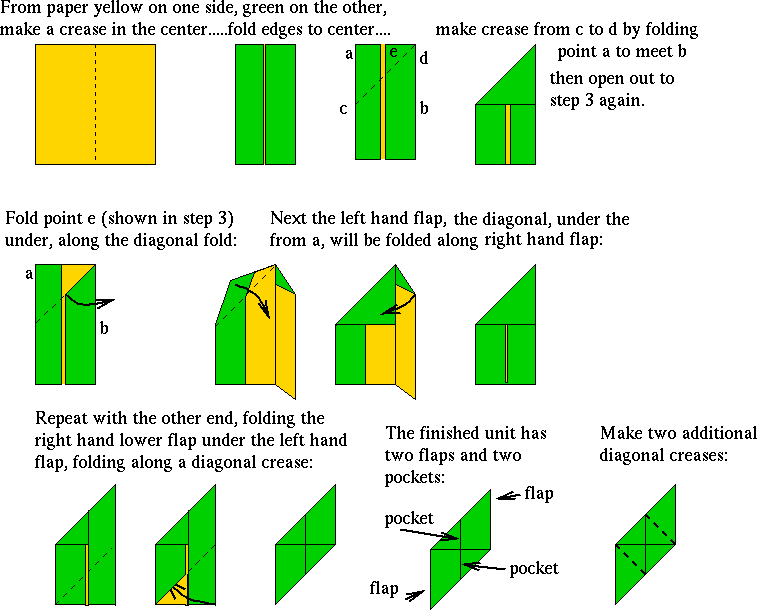

Origami is the art of paperfolding.
The Sonobe unit has the shape of a parallelogram with 45 and 135 degrees angles, divided by creases into two diagonal tabs at the ends and two corresponding pockets within the inscribed center square. The system can build a wide range of three-dimensional geometric forms by docking these tabs into the pockets of adjacent units.

Three interconnected Sonobe units will form an open-bottomed triangular pyramid with an equilateral triangle for the open bottom, and isosceles right triangles as the other three faces.
Rhombitruncated cuboctahedron or whatever


incoming(1): nibble dice
Last update on 14Y13, edited 4 times. +14/20fh deadend -----|